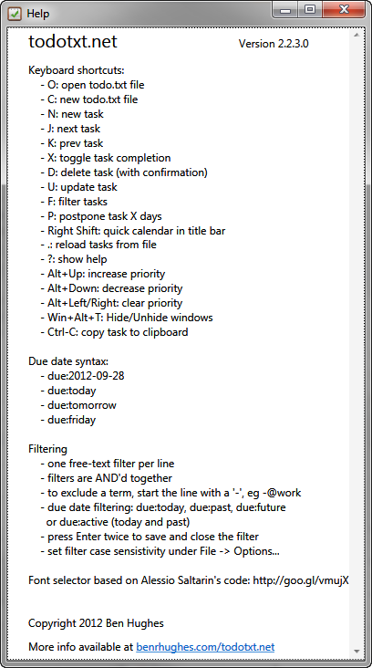

My preferred Todo.txt software for Windows and iOS
Todo.txt for non-geeks and keyboard-junkies
Todo.txt stared out as a file format plus some command-line tools to manage it. That approach is great for programmers on Unix-like operating systems, like Mac OS X, Linux, or BSD, but is terrible if (a) you would never touch a command line ever in your work life, or (2) you are using Windows. Fortunately, there is at least one excellent Windows desktop application that follows the todo.txt specifications, is lightning fast, and offers easy-to-remember keyboard shortcuts for everything: Todotxt.net.
On Windows: Todotxt.net
Todotxt.net is a "minimalist, keyboard-driven Windows GUI for your todo.txt file." It is a specialized editor for the todo.txt file that allows you to sort and filter your to-do list in many ways, and to add and check off tasks very quickly.

Almost every feature can be accessed by a single keystroke: you add tasks with n, update them with u, check them off with x, and delete them with d. It is very simple and intuitive.

Once I set up Todotxt.net to sort my tasks by priority, and figured out how to change priorities quickly (using the alt-up and alt-down keyboard shortcuts), I found myself with the quickest method ever to add, prioritize, and reprioritize tasks.
Sometimes, when I need to do a brain-dump of dozens of new tasks I edit my todo.txt file directly using my favorite text editor, which is quick and easy. When I do so, I don't even have to bother exiting Todotxt.net first—it just picks up the changes and never screws up.
Todotxt.net is free and open source software.
On iOS and Android: Todo.txt Touch (iOS) or Todo.txt (Android)
My phone and tablet are secondary devices in my work life, but are by no means optional. I don't enter a huge number of tasks on my phone or iPad; I mostly mark tasks complete or change task priorities on those devices. With the help of Dropbox for syncing, the official Todo.txt apps on iOS (which is a universal app for both iPhone and iPad) and Android are more than adequate for me for simple task management.
On iOS, Todo.txt Touch is purposely bare-bones compared to the many beautiful to-do apps on the platform, but it just works. It truly represents function before form. It gets the job done and the sync with the desktop, via Dropbox, is instantaneous and flawless. What I love about Todo.txt Touch is that it is dead simple to use and does exactly what it is supposed to. What is also neat to think about is that if I want a flashier Todo.txt app for iOS or Android, I am (or someone else is) free to create it.
The iOS and Android Todo.txt apps are free (as in speech, not as in beer) and open source software. The developer charges a couple bucks for them and the money goes back to the development community.